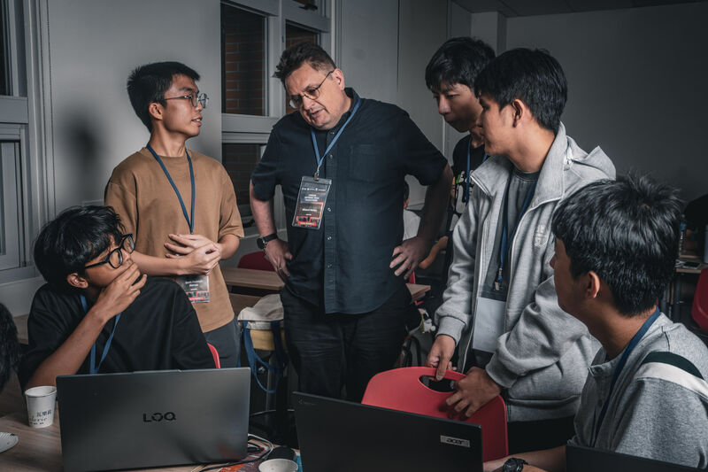

My Projects
Some of my cool projects. You can see me yap about my projects on LinkedIn!

Optical Dual Spectrum Intelligence Node
Developed ODIN for the Taiwan Defense Tech Hackathon 2026, an experimental low-cost multispectral imaging system combining RGB and near-infrared imaging for environmental observation and analysis.

Research @ Work Coffee
Engineered a Python data pipeline to analyze 13 months of daily waste records (N=396). Identified 65% waste reduction (28.14 → 9.80 kg/day) and proved zero weekday variance via non-parametric testing. First author, COMSERVA Journal.

FaceVox
Assistive facial expression recognition mapping 478 MediaPipe landmarks to real-time intent classification (YES, NO, HELP, PAIN). Evaluated across Random Forest, Gradient Boosting, and Transformer models.

MacOS Sequoia Replica
Browser-based macOS Sequoia-inspired desktop with custom window management, virtual web apps (Terminal, Safari, Spotify, Finder, VS Code), and Cloudflare Worker AI assistant.